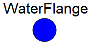

Package with water interfaces
This package provides water interface.
Extends from Modelica.Icons.InterfacesPackage (Icon for packages containing interfaces).
| Name | Description |
|---|---|
| WaterFlange | Interface for water |
| PartialTwoPort_water | Partial component with two ports |
Interface for water

This connector is composed of:
- a potential variable "p" which is the pressure [Pa];
- a flow variable "w" which is the water mass flowrate [kg/s];
- two stream variables "h" which is specifc enthalpy [J/kg].
| Type | Name | Description |
|---|---|---|
| AbsolutePressure | p | Pressure [Pa] |
| flow MassFlowRate | w | Mass flowrate [kg/s] |
| stream SpecificEnthalpy | h | Specifc enthalpy [J/kg] |
Partial component with two ports
| Type | Name | Description |
|---|---|---|
| WaterFlange | water_flange2 | |
| WaterFlange | water_flange1 |